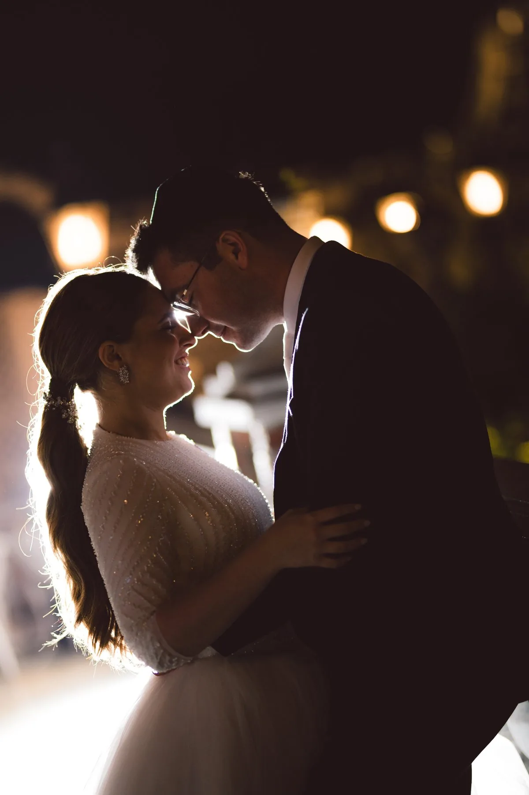
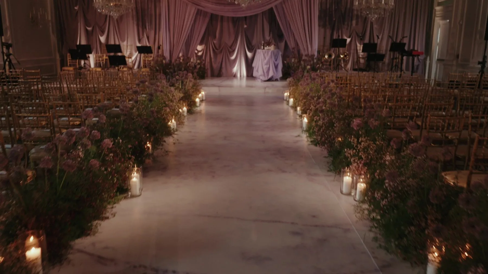
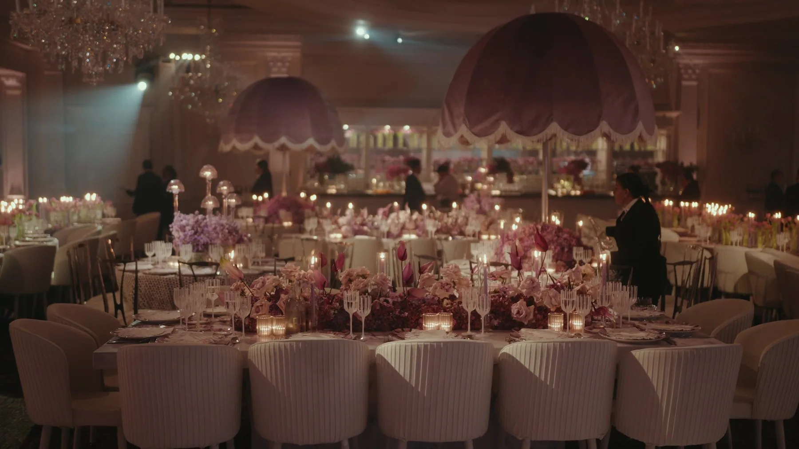

Quality
Our films tell the story through the moments that actually mattered. The small exchanges no one else noticed. Every frame is chosen with care, graded with intention, and built to feel as alive in ten years as it does the first time it plays.


For most of the last century, a wedding was something you remembered in photographs. A frame on the wall, an album on the shelf, a single still moment held still forever. Those images still matter, and they always will. But something has changed in how we hold on to the people and moments we love.
We remember in motion now. The way she laughed, not the laugh frozen but the laugh unfolding. His voice during the vows, the exact pause before the words came. The sound of the room when the music started. A photograph can show you the day. A film can give it back to you.
This is why our cinematography is not a service added on beside the photography. It is a craft of its own, with its own team, its own cameras, and its own standard. Our films are produced, not recorded. Shot from many angles, scored, and color graded by hand, so that what you watch years from now carries the full weight of what it felt like to be there.

Our films tell the story through the moments that actually mattered. The small exchanges no one else noticed. Every frame is chosen with care, graded with intention, and built to feel as alive in ten years as it does the first time it plays.

The edit is where a film becomes itself. Through color grading and a patient hand in the cut, the day takes on rhythm and feeling. A full cinematic feature, a highlight film, and the short, sharable pieces made for the way you share. One wedding, told in several ways.

The hardest part of a wedding is how quickly it passes, and how long you usually wait to live it again. We close that gap. A first teaser reaches you while the night is still vivid, often within a day. Your full gallery follows in the weeks after, your film soon behind it, each one edited entirely in house.

Included with every wedding, and made to a standard most couples only expect from the movies. Filmed by multiple cinematographers from every angle, so nothing is flat or missed. Then it is color graded by hand, frame by frame, scored, and cut with the rhythm and pacing of a short film. The result does not look like a wedding video. It looks like cinema, because it is made like cinema.
Imagine a film about the two of you, the kind you would see in a theater, except it is real, and it is yours. It begins long before the wedding, with sit-down interviews where you tell your story in your own words. We film your engagement. We capture the wedding not just as it looked but as it felt. And after, now married, we sit with you once more to look back. Every frame is directed, scored, and graded, then woven into a feature film of your love story, with your wedding at its heart. Ask us, and we will tell you what it takes.
Motion films from the studio catalog will appear here once they are exported into this draft.
